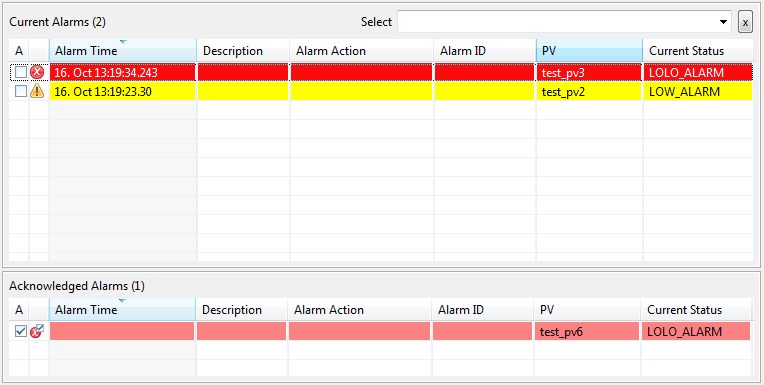

Alarm Table
Alarm Table lists active and acknowledged alarms in a table-like structure. The table is identical to the table that
is available in the Alarm Perspective.

Operations
In OPI editing mode user is allowed to configure the alarm table to suit the requirements. It is possible to adjust
the size of the table, columns, columns order, and many other properties common to BOY widgets. The filter item
also has to be set on the table in order to define the configuration (or its subsystem), which the table should
display. In runtime mode, the table listens to live status obtained from the alarm server and displays the alarms
according to the defined policies. User is allowed to acknowledge and unacknowledge alarms and to do some minor
layout tweaking (e.g. adjust the width of column, change sorting direction and criteria). All other properties
are only accessible via rules and scripts.
Special Properties
- Filter Item (filter_item)
- The parent item, which defines the alarms to be displayed. Only the alarms that are direct
or indirect descendants of this item will be displayed. The filter item has to be a complete item name, including
the configuration name (e.g. to display configuration "Demo", enter "/Demo"; to display a subsystem "RFQ" of
configuration "Demo", enter "/Demo/RFQ".
- Sort Ascending (sort_ascending)
- Defines if default sorting of the alarms should be in ascending or descending order.
- Sorting Column (sorting_column)
- Defines the column used for default sorting criteria.
- Time Format (time_format)
- Specifies the time format used for the TIME column. Time format must useJava DateTimeFormatterrules. Ex.: For ISO time, use: yyyy-MM-dd'T'HH:mm:ssX
- Unacknowledged Blink (unacknowledged_blink)
- If true all unacknowledged alarms icons will blink.
- Writable (writable)
- Specifies is user is allowed to acknowledge and unacknowledged alarms with this table.
- Columns (columns)
- Allows to specify the list and order of the table columns.
- Max Number of Alarms (max_number_of_alarms)
- Defines the maximum number of alarms displayed in the table. If more alarms
exist for the selected filter item, they will be suppressed. Only the top N alarms that match the selected sorting
criteria are displayed.
- Separate Tables (separate_tables)
- Specifies whether the acknowledged and unacknowledged alarms tables should be
separated or combined.
- Table Weight Acknowledge (table_weight_acknowledge)
- Defines the sash element weight of the acknowledged table.
- Table Weight Unacknowledge (table_weight_unacknowledge)
- Defines the sash element weight of the unacknowledged table.
- Table Header Visible (table_header_visible)
- Defines whether the header displaying the number of all active and acknowledged
alarms, as well as the filter combo and button are displayed or hidden. If hidden the table will take over the space
otherwise occupied by those widgets.
- Columns Headers Visible (columns_header_visible)
- Defines if the headers of the table columns are visible or not.
See Also